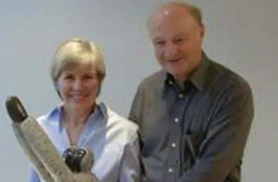

Warum Simbabwe?
Doris und Hans Herz legten den Grundstein.
Der Bezug begann mit persönlicher Erfahrung vor Ort. Daraus entstand der Wunsch, gezielt dort zu helfen, wo Vertrauen und lokale Partner Wirkung möglich machen.